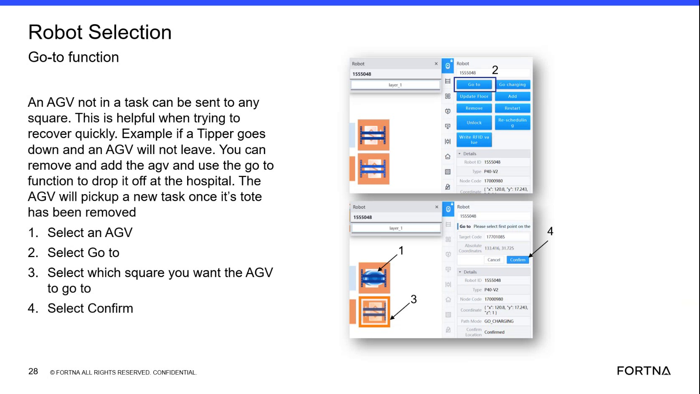

| Procedure ID | proc_use_optsweep_go_to_function_send_agv_to_selected_square_v1 |
|---|---|
| Title | Use OptiSweep Go-to Function to Send an AGV (Not in a Task) to a Selected Square |
| Procedure Type | operation |
| Primary Role | L1_support |
| Support Safe | Yes |
| Capability Tags | device_roster_state |
| Access Surface | rms_ui, aveva_hmi |
| Audience Roles | L1_support |
| Failure Pattern Tags | None |
| Validation Status | needs_sme_review |
| Merge Status | source_finalized |
Send an AGV that is not currently in a task to a selected destination square using the OptiSweep Go-to function. This is intended for quick recovery scenarios (e.g., when a tipper is down and an AGV will not leave), including dropping the AGV off at the hospital so it can pick up a new task after the tote is removed.
Use when you need quick recovery by sending an AGV that is not in a task to a chosen square (for example, to drop it off at the hospital when a tipper is down and the AGV will not leave).

Responsible role: L1_support
Instruction:
Open the OptiSweep interface that contains the Robot Selection and Go-to controls shown in the segment.
Expected result:
You can see the Robot Selection area and the Go-to option/button, along with a destination square selection area and a Confirm control.
Responsible role: L1_support
Instruction:
In Robot Selection, select the AGV that is “not in a task.”
Expected result:
The intended AGV is selected in the Robot Selection area (i.e., the UI reflects that AGV as the active selection).
Responsible role: L1_support
Instruction:
Select the “Go to” function for the selected AGV.
Expected result:
The Go-to option/workflow becomes active in the UI for the selected AGV.
Responsible role: L1_support
Instruction:
Select which square you want the AGV to go to (destination square).
Expected result:
The destination square is selected/highlighted in the UI.
Responsible role: L1_support
Instruction:
Select “Confirm.”
Expected result:
After Confirm, the selected AGV is commanded to move to the chosen destination square (e.g., drop it off at the hospital per the segment’s example).
Stop or Escalate If: